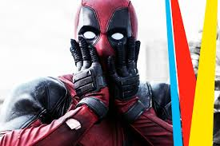
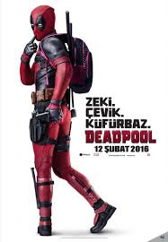
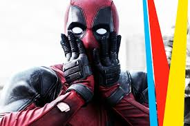
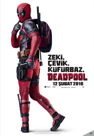

Deadpool, Fabian Nicieza ve Rob Liefeld tarafından ilk olarak New Mutants’ın 98. sayısında kötü bir karakter olarak ortaya çıkmıştır. Daha sonrasında Wolverine’nin kurduğu X-Force takımına katılıp iyilerin tarafına geçmiştir ama tam olarak iyi bir karakter değildir. Kelimenin tam anlamıyla kahramanları yok etmeye çalışan bir Anti-Kahramandır. Yaratıcılarından Rob Liefeld bir Teen Titans çizgi dizisi hayranıdır oradaki Deathstroke’un parodisi olarak Deadpool ortaya çıkmıştır. Deathstroke’un gerçek adı Slade Wilson’dır Deadpool’un ise Wade Wilson’dır. Merc With a Mouth olarak tanınır çünkü çok inanılmaz gevezedir. Domino onun konuşarak bir adamı intihara bile ikna ettirebileceğini söyler. Deadpool’u diğer karakterlerden ayıran en temel özellik ise onun 4. duvarı kırabilmesi yani kendisinin bir çizgiroman karakteri olduğunu bilmesidir. Okuyucu ile birebir iletişime geçebilir, gerçek dünyayla alakadar rahatça konuşabilir bu çoğunlukla okuyucuyu fena bir şekilde güldürür. Deadpool yemek olarak Taco ve Chimchanga’ya bayılır.
 



Annesinin kanser sonucu ölmesi, babasının yakın bir arkadaşı tarafından öldürülmesi ve Kanada ordusundan atılmasından sonra Wilson, Weapon-X programına katıldı. Ordudan atılması ve Weapon-X programına katılması arasında geçen süre zarfında Wilson paralı asker olarak çalışmış ve kariyeri esnasında Deadpool takma adını henüz hiç kullanmamıştır. Fas ve Japonya’da gizli görevlerde çalışmıştır. ABD’de geçirdiği zamanda Vanessa Copycat isimli bir fahişe ile tanışır. Wilson bu mutant fahişeyle aşk yaşarken orta doğulu bir örgüt tarafından Kör Al (Blind Al) olarak tanınan İngiliz Ajanı Althae’yı öldürmesi için kiralanır. Görevinde başarısız olan Wilson, Al’ı elinden kaçırdığı yetmiyormuş gibi ortadoğulu örgütü de kendine azılı düşman eder. Başarısızlığının cezası olarak Wilson’un sevgilisini öldürmeyi hedef olarak alan örgüt, Zoe Culloden’in müdahelesiyle emellerine ulaşamaz. Culloden aslında Landau, Luckman & Lake adına çalışan bir ajandır. Wilson’un Mithras adı verilen bir kurtarıcı olduğuna inandığı için onu takip etmektedir. Bu olayların ardından kanser olduğunun farkına varan adamımız Wilson tedaviyi redederek şehirden ayrılır ve Vanessa’yı geride bırakır. Bu gelişme karşısında Wilson’un Mithras olamayacağını düşünen Culloden de Wilson’un peşini bırakır.

Weapon-X adı verilen askeri deney programınının kanserini tedavi edebileceğini öğrenenen Wilson tavsiye üzerine programa kayıt olur. Kanserinin son aşamaya gelmiş olması ve tıbbi açıdan yapılabilecek bir şeyin kalmamış olması yüzünden bilimadamları farklı bir yol izlerler. Buna göre Wolverine’in tedavi faktörü Wilson’a eklenecek, lakin bu tedavi faktörü kanserin öldürdüğü her bir hücreyi anında üretebilmesi için geliştirilecektir. Bu nedenden ötürü Deadpool’un tedavi faktörü Wolverine’ininkine göre üstündür. Deney sonucu başarısızlık ile sonuçlanır ve tedavi faktörü Wilson’u etkileyeceğine vücudunu istila eden kanser dokusuyla etkileşime geçer. Sonrasında kanser olağan dışı bir hızla Wilsonun bütün vücuduna yayılır. Deneyin başarısızlık ile sonuçlandığa kanaat getiren bilimadamları Wilson’u başarısız deneklerin yanına atarlar.
Bu başarısız denekler bir önceki aşamadan çok daha ağır, vahşi deneylere maruz kalırlar. Bu vahşet o kadar korkunçtur ki denekler ilk önce kim ölecek diye bahisde bile bulunurlar. Bu bahsin adı Deadpool’dur. (Türkçesi: Ölüm havuzu) Buna göre her denek ortak havuza (pool) para yatırır, bilen taraf bütün parayı alır. Bu yeni deneyler karşısında akli dengesini kaybetmeye başlayan Wilson ölümle yaşam arasında gidip gelirken Ölüm’ü (Death) farkeder. Ölüm hala canlı bir ölümlü tarafından farkedildiğini anlayınca şaşırır ve Wilson için farklı hisler beslemeye başlar. Ölümle bir nevi aşk yaşayan Wilson, ona kavuşmak için kendini öldürtmenin yollarını bile arar. Baş gardiyan Ajax’ı ne kadar kışkırtsa da Dr. Killebrew araştırmaları için Wilson’a canlı olarak ihtiyacı vardır. Bu asi tavırlarıyla Ölüm bahsinin en üst sıralarına tırmanan Wilson, diğer deneklerin de saygısını kazanır. Belirli bir süre sonra Ajax kışkırtmalara daha fazla dayanamaz ve hıncını Wilson’un arkadaşlarından birinden çıkarır, can çekişen arkadaşını huzura kavuşturmak için kendi elleriyle öldüren Wilson labaratuarın birinci kuralına karşı gelmiş olur ve bu suçun cezası ölümdür. Ajax, Wilsonu kalbini sökerek öldürür ve onu ameliyat masasında öylece bırakarak deneklere gözdağı vermeye gider. Wilson’un ölüm anındayken duyduğu inanılmaz nefret ve kin, tedavi faktörünün aktif hale gelmesini sağlamış ve Wilson’u ölümden geri getirmiştir. İnanılmaz bir nefret patlaması yaşayan Wilson intikam almak için Ajax’ın peşinden gider. Ajax’ı başkalarına gözdağı verirken kıstıran Wilson, makinalı tüfekleriyle Ajax’ı paramparça eder. Weapon-X tarafından katledilen yoldaşlarının anısına kendisine Deadpool adını takar ve labartuvarı yok ederek olay yerinden uzaklaşır.
Deadpool bir seri katildir. Ancak sınırları vardır. Kadın ve çocuk öldürmez. Düşmanlarını öldürmek onun için bir sanattır. Her öldürüşüne mutlaka özen gösterir. Ninjalık eğitimi vardır. Ayrıca çok da iyi nişancıdır ve her silahı kullanabilir. Kendini ışınlamak için yanında ışınlanma aleti taşır. İyileşme yeteneği çok güçlüdür. İyileşme yeteneği Hulk’ın onu un ufak etmesine bile dayanabilir. Kafasının ya da vücudunun herhangi bir parçasının kopmasına alışıktır. Deadpool’un iyileşme yeteneği Wolverine göre çok daha hızlıdır. Zehir ve alkol benzeri şeylere dayanıklıdır, asla sarhoş olmaz. İyileşme yeteneği onun beyin hücrelerini öldürüp yeniden canlandırdığından tam bir delidir ve şizofrendir. Kafasında onu yansıtan iki kişiliği daha vardır. Çizgi romanlarda onun düşünce kutuları bu yüzden iki türdedir. Derisi kanser hücrelerini yeniler ve öldürür bu yüzden derisi çok çirkindir. Bu nedenle asla kostümünü ve maskesini çıkarmaz. Görsel hafızası çok iyidir, kolayca unutmaz. Deli olmasının yanında çok iyi plan yapar. Planları herkese çok saçma gözükür ama en sonunda bütün planları tutar. Ayrıca Deadpool ölümsüzdür fakat ölümsüz olmasının nedeni iyileşme yeteneği değildir. Ölümsüz olmasının nedeni Thanos’ un onu lanetlemiş olmasıdır. Yeni X-force 800 yıl sonraki gelecekte hala onun yaşadığını görür. Ayrıca Deadpool İngilizce’nin dışında Almanca,İspanyolca ve Japonca da çok iyi seviyede konuşabilir. Aynı zamanda deli olduğu için beynine girilemez. Telepatlara karşı dayanıklıdır. Yani Professor X gibi kişiler ona karşı güçlerini efektif olarak kullanamaz. Marvel’dan Deadpool serisini uzunca bir süre daha izleyeceğimiz müjdesi geldi. Umarız gelecek bölümler de yine aynı şekilde sürükleyici ve etkili olur.